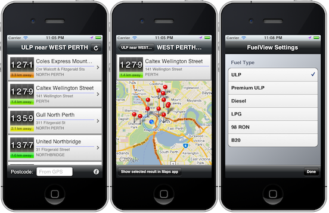
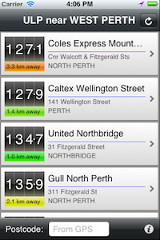

Please note: this article is part of the older "Objective-C era" on Cocoa with Love. I don't keep these articles up-to-date; please be wary of broken code or potentially out-of-date information. Read "A new era for Cocoa with Love" for more.
An RSS-feed and location-based iOS application
The purpose of this post is so that I will have a link to give people when they ask: how do I write an iOS application that pulls data from an RSS feed, displays it pretty and can put things on a map. I'll show you all of that and more as I rewrite my oldest iOS application from scratch: FuelView.
The app presented in this post, FuelView, is freely available on the Australian App Store.
Introduction
I am commonly asked to write a post where I show a basic "pull data from the network and display" application.
But I think "basic" is boring and I try to avoid it in my blog posts. Instead, I decided to rewrite an application that looks simple but actually has a deceptively large amount of work to perform. It's a far better example of a real-world iOS application since there should always be enough work done transparently by your application that it leaves the user with a "Wow!"
The actual application is only 3 screens. While a truly simple three screen application might take about 2-3 hours per screen to implement (even if you're just stumbling your way through), this program actually took me about twice that time to implement (around 15 hours or two full days of programming) and I definitely knew what I was doing, since I've written the entire program before.
If you're curious though, in its first incarnation, this program took me 2 weeks to fully implement — way back in July 2008. It was the first program I ever tried to write for iPhone OS 2.0 and I did a lot of things the wrong way. Having a vague idea what you're trying to do really does make a 5 to 10 times difference to implementation time and unfortunately, the only way to learn is to stumble headlong into things and run the risk of getting everything wrong the first time.
There's a reason why this version is a rewrite from scratch.
Useful code in this post
While the application in this post is only directly useful to people living in Western Australia, I think this is a really interesting project as it contains a lot of very useful snippets of code (some of which I've written posts on before) including:
- An iOS version of my Gloss Gradient drawing code (you can see the Mac version in Drawing gloss gradients in CoreGraphics)
- Two persistent stores with one
NSPersistentStoreCoordinator. It seems like a strange scenario that would only be needed in strange situations but the use case turns out to be really common. - A full set of "single line Core Data fetch" methods (something I've previously written about in Core Data: one line fetch)
- Getting the GPS location (which you can also see in my earlier posts: WhereIsMyMac, a Snow Leopard CoreLocation project and A sample iPhone application with complete unit tests)
- Pulling data from an RSS feed (using my
XMLFetcherclass from Classes for fetching and parsing XML or JSON via HTTP) - Caching data in the Application Support directory (using a
DirectoryLocationscategory from Finding or creating the application support directory) - Function to create a two point
CGGradientReffrom twoUIColors(another in a long list of convenience functions that I'm surprised aren't part of Cocoa) - An example of using a category as an Adapter interface (something I discussed in Adapter interfaces in Objective-C, using categories without giving any concrete examples)
- Scrolling a text field that isn't in a table (a similar idea but different implementation to my earlier post Sliding
UITextFieldsaround to avoid the keyboard) - A Core Data Postcode database (originally created from a CSV file as shown in Writing a parser using
NSScanner) - A flexible, reusable controller/table/cell structure (as I discussed in
UITableViewconstruction, drawing and management) - A
CheckmarkCellthat self-manages radio button style selection (without theUITableViewControllerneeding to do anything when the cell is selected, the cells in the section will automatically ensure only one is selected at a time) - Forward geocoding using Google's Maps API (
MKReverseGeocodergoes the other way but a non-Cocoa approach is needed to go from an address to longitude/latitude)
Plus a whole lot more. It really is a densely packed little program.
So where is all the "useful code"? If you skip forward to the second last section, I reveal where in the program you can find all of these code samples.
About FuelView
FuelView is an application for getting fuel (petrol/gasoline, diesel, etc) prices in Western Australia. It pulls its information from an RSS feed provided by the Western Australian government's "Fuel Watch" scheme that provides fuel prices for all stations in that state.
(No, I don't live in Western Australia — I'm on the opposite coast of Australia — but it seemed like a good idea for an iPhone app at the time.)
The application looks like this:
Download the complete project associated with this post: FuelView.zip (330kb).
Note: the code is all freely available under a zlib-style license but this license does not extend to the other assets. You may not use the icons or application name in your own programs.
The previous version of FuelView (1.1.10 is available for free from the iTunes App Store in Australia. I'll be resubmitting this version (probably 1.2) in a week or two.
Deceptive complexity
It all looks very simple; you get the location from the GPS, you pull the correct RSS feed for the location, stick pins in a map for the result.
If that were the actual number of steps involved, it would be great. However, it's not so simple. Let's take a quick look at the issues that will cause the most trouble for this program.
User location issues
The GPS gives latitude/longitude but the getting the RSS requires a Western Australian suburb name. In order to make this work, you need to be able to look up all the Western Australian suburbs and find the nearest one for your longitude/latitude. This requires a database of suburb names and their longitude/latitude and some code to search this.
Additionally, I want to be able to let the user specify a postcode for their location instead of using the GPS. Again, I need to be able to look up the suburb name for the postcode. Additionally, any code that requires the user's location must be able to tolerate the location being a postcode, not a raw longitude latitude.
A further complication arises because the FuelWatch RSS feed only exists for "larger" suburbs. Names of smaller suburbs can't be used, so the list of suburbs must be filtered to match the list that the FuelWatch website recognizes.
Station location issues
The RSS feed gives the fuel station locations as street addresses but I need longitude and latitudes for them so I can stick pins in the map or calculate the distance between the user and the station.
While this is a similar problem to resolving the user's location, it is actually trickier since new stations appear all the time, so this database must be dynamic (unlike the static postcode database).
I need to actually perform geocoding of fuel stations but there's a problem: Google's APIs are highly restrictive about how often you can make requests. The only way to avoid problems is to pre-populate the database and then have users only perform forward geocoding requests when an unknown fuel station appears and immediately add the new station to the database.
Custom drawing
Then I have the more straightforward complexity of custom drawing. I want to have most of the interface follow a custom aesthetic (because plain is boring) and that takes time and effort. I also need to ensure that drawing and layout function properly on an iPad and an iPhone.
The real design of the program
Maps Key Note: I have removed my Google Maps API key from the code. If you want to use this code, you'll need to apply for your own Google Maps API key and set it the MapsKey at the top of the LocationsController.m file.Fifth implementation iteration
Implementing the SettingsViewController to switch fuel types and the MapsViewController to show the current array of results on a map turns out to be very simple. There's not a significant amount of complexity in either of these views.
Design Mistake #2
One point to notice in the implementation of the MapViewController is that I needed to implement an "Adapter category" on NSDictionary to allow the NSDictionary to respond to the MKAnnotion protocol so I could use the dictionaries to display the pins in the map.
How is this a design mistake?
Needing to put categories on generic classes like this is an indication that you probably should have used a dedicated class to contain your data. The results in the program should not be generic NSDictionary objects.
Until this point, the "generic"-ness of the main data type in the program has been ignored. The reality though is that the construction of NSDictionary results from XPathResultNodes and the resolving of station location for each result has been handled by the ResultsViewController — this is all work that a Result class should be performing for itself instead of using a generic NSDictionary class and making the ResultViewController handle all the work.
But ad hoc trickery like adding categories to generic container classes is a big flag that you've forgotten to use a custom class for objects that genuinely need their own behaviors. If you find yourself needing something like this: replace the generic container with a proper custom class.
I'm not saying that adapter categories are a bad idea. Sometimes you can't or shouldn't change the underlying class — in this case and adapter is a good thing. But here in FuelView I can change the underlying class and should, in order to reduce the code burden on our controllers.
So where is all the "useful code"?
An iOS version of my Gloss Gradient drawing codeThe GlossGradients.m code is in the project. It's very similar to the original code except that there aren't HSV conversion methods on UIColor like there is on NSColor, so I've had to write these methods myself. It is used in the ResultsView drawing code.
NSPersistentStoreCoordinatorThe LocationsController uses two different persistent stores: a read-only store inside the application bundle that is shipped with the application contains the pre-supplied results for station lookups. But the application bundle can't be changed, so I create a read-write store in the Application Support directory. The NSPersistentStoreCoordinator is smart enough to save the store to the correct location automatically.
The NSManagedObjectContext+FetchAdditions.m file contains a range of different fetch request creation methods and single line fetching implementations (for set, array and single object results). It is used in the LocationsController and the PostcodesController to perform the actual queries on the Core Data context.
The ResultsViewController operates as a CLLocationManagerDelegate. The location receiving code is pretty simple but I think the error handling code in locationFailedWithCode: is more interesting.
Of course, an RSS feed is just XML. We're after the <item> nodes in the result so I use an XMLFetcher to with an XPath query of "//item". You can see this in the setLocation: method and the response is handled in the responseReceived: method (the XPathQueryNodes are turned into an NSDictionary).
The application support directory is accessed/created in the persistentStoreCoordinator method of the LocationsController. As I said above, this is for writing extra Locations to the Locations Core Data context.
The function TwoPointGradient is pretty simple; it just creates a CGGradientRef taking two UIColors to use as the endpoints of the gradient. However, it's 23 lines of code that don't need to be retyped in the ResultCellBackground, ResultView and the PageCellBackground.
Putting an adapter on a generic container class is a bad idea if you can easily change the class to something of your own implementation. But this is still an example of adapting a class' interface to suit your own needs — something that is very useful when you don't have control over the underlying class.
Scrolling a text field that isn't in a tableThe manually entered postcode is in a text field on a UIToolbar and when the keyboard appears, the entire UIToolbar scrolls up with the keyboard. This behavior is handled by the PageViewController (everything below the "Handle the sliding/scrolling of the view when the keyboard appears" pragma except the dealloc method). The PageViewController needs to be set as the delegate of the UITextField for this to work.
The PostcodesController shows how to implement a static data store using Core Data. I think I could probably write a base-class for this type of singleton that would dramatically reduce the common code between the PostcodesController and the LocationsController.
The PageViewController, PageCell, all the view controllers and all the table cells are directly based on the code I presented in UITableView construction, drawing and management.
CheckmarkCell that self-manages radio button style selectionIt's strongly reliant on the PageViewController and PageCell classes but the CheckmarkCell shows an easy way (easy for the rest of the program) to manage a section in a table where only one row can be selected.
The locationForAddress:receiver: method in LocationsController performs an XML request on Googles Maps API to forward geocode addresses into longitude and latitude (the response is handled in mapsResponseReceived:). Again: you'll need your own Maps API Key to make this work.
Conclusion
Download the complete project associated with this post: FuelView.zip (330kb).
Note: the code is all freely available under a zlib-style license but this license does not extend to the other assets. You may not use the icons or application name in your own programs.
The app presented in this post, FuelView, is freely available on the Australian App Store.
I did this rewrite of FuelView for three reasons:
- I hadn't written any code at work for a week or two — I needed to scratch my codemonkey itch with a few hours of actual programming instead of meetings and documentation.
- Preparing code like this for my blog motivates me to review my reusable classes and make them more presentable.
- I'm often asked to show an iOS program that pulls data from an RSS feed.
The first two points are entirely for my own purposes and went fine, thanks.
On the third point — this is definitely code that pulls from an RSS feed. I hope the scale of the program doesn't make it hard to see how the basics work. In addition to RSS feed handling though, there's lot of other code here so I hope there's something here for programmers at a range of different skill levels.
Classes for fetching and parsing XML or JSON via HTTP
A big weakness in Objective-C's weak typing